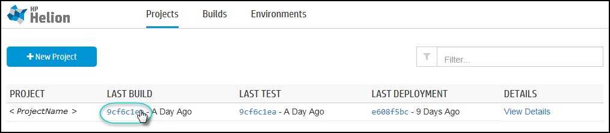
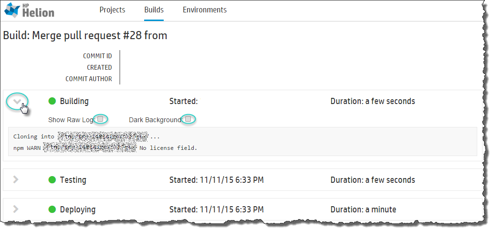

Every build, test, deployment and post-deploy event generates log files.
To access the logs, click the Projects tab and then click the title of a particular build.

Each event - Building, Testing, and Deploying - can be expanded to display the logs associated
with that event. Click the arrow icons to expand or collapse each section.
- Checking Show Raw Log will strip out the message formatting designed to make the
logs easier to understand. Only the raw output is displayed.
- Checking Dark Background will invert the colors to white text on a black
background. This may be easier to read.